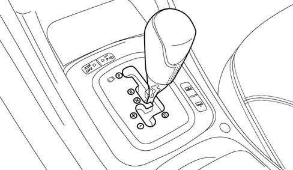

GEAR SELECTOR LEVER
- Path
- Descriptions > 21 GEARBOX > GEAR SELECTOR LEVER
- Kind
- system description
- Applies to
- engines: 2.4 20V, 3.0 V6, 3.2 V6, 2.4 JTD 20V; all production periods
- Interactive page
- https://sloeber94.github.io/elrnDB-lThss/en/#/202208
Applies to: all engines; all production periods
OPERATION
The gear selector lever can be operated according to two different grids in relation to the gearbox operating mode.
Full Auto Mode
In this completely automatic gearbox operating mode the lever moves along the right part of the grid in accordance with the usual positions for automatic tansmissions:
- P, park;
- R, reverse;
- N, neutral;
- D, drive.
Tip mode
When the selector lever is moved to the left section of the grid the gearbox operates according to the TIPTRONI mode with the selection of the gears entrusted to the manual intervention of the driver who by pushing the lever forward goes up a gear and by pulling it backward changes down.
